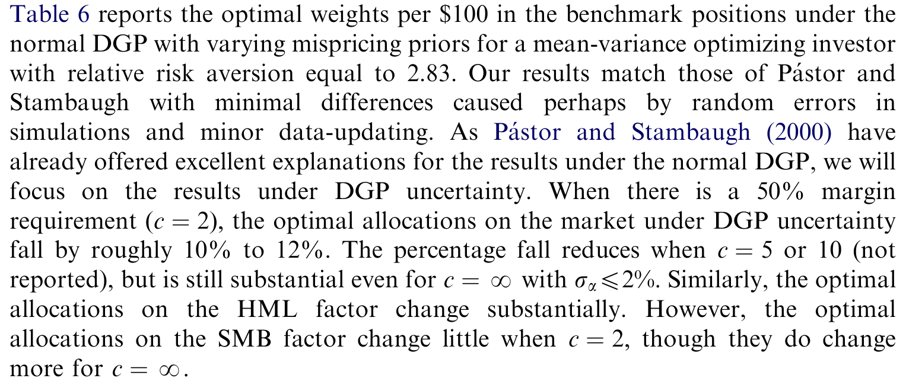
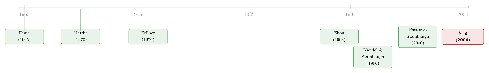

正态分布被数据一票否决，你的组合却几乎毫发无伤
本文读的是 Tu & Zhou (2004, Journal of Financial Economics)：股票收益的正态假设被数据彻底否决（多元峰度高达 220.756，p 值小于 0.00001），作者把「我们连收益服从什么分布都不知道」这件事——也就是数据生成过程不确定 (data-generating process uncertainty, DGP uncertainty)——正式塞进贝叶斯组合决策。结论却出人意料：考虑厚尾会显著改变参数估计和最优权重，但一个均值-方差投资者为「错用正态」付出的确定性等价损失却小到可以忽略（50% 保证金下最多只有 0.54%/年）。
1 一个所有人都知道、却没人敢动的假设
做量化的人，几乎没有不知道「股票收益不是正态」这件事的。月度收益有厚尾，有偏度，崩盘比正态分布预言的要频繁得多——这从 Fama (1965) 那篇经典论文起就反复被写进教科书。
可吊诡的是：在做投资组合的时候，我们又几乎无一例外地假设收益是联合正态、且独立同分布的。从 Markowitz 到 Fama-French (1993)，再到一整代贝叶斯资产配置文献，背后那张「正态」的底牌从未被真正掀开。
于是一个让人不太舒服的问题浮上来：如果正态假设被数据斩钉截铁地拒绝，那我们这些年算出来的最优组合，是不是全都建在沙地上？
这正是 Tu 和 Zhou 想回答的问题。而他们最终给出的答案，比问题本身更有意思——估计变了，权重变了，可你的效用几乎没变。本文要做的，就是把这个「反转」一步步讲清楚。
2 第三种不确定性
要理解这篇论文的位置，得先看清它站在谁的肩膀上。
近年的贝叶斯金融文献，本质上都在和「不确定性」打交道。第一种是参数不确定 (parameter uncertainty)：均值、协方差是估出来的，不是上帝给的（关于这一点，可参见《当你不再相信自己估出来的那个均值》）。第二种是模型不确定 (model uncertainty)：你信哪个资产定价模型？CAPM 还是三因子？Pástor and Stambaugh (1999, 2000) 把这层「定价误差不确定」也装进了组合决策，让投资者对模型的「错误定价」(mispricing) 程度持有一个先验（关于这条线，亦可参见《算不准均值的那群人，悄悄退出了股市》）。
接着，一个自然的问题是：这两层不确定性，都是在假定数据服从正态的前提下展开的。可投资者真的相信收益是正态的吗？显然不。这就引出了本文的主角——第三种不确定性：
投资者甚至不知道数据是从哪一族分布里生成出来的。这就是数据生成过程不确定 (DGP uncertainty)。
Tu 和 Zhou 的做法是：保留 Pástor-Stambaugh 框架的参数层和模型层，只把那个「正态」的假设撬开，换成一整族可能的分布，再让投资者对「哪一族才是真的 DGP」也持有先验。于是投资者要同时面对三重不确定：参数、模型、以及 DGP。从这个意义上说，本文是对 Pástor and Stambaugh (2000) 的一次自然补完。
3 数据：12 个头寸，35 年月度收益
沿用 Pástor and Stambaugh (2000) 的资产空间，作者考虑一个含 n=12 个风险头寸的投资域：
- 3 个 Fama-French 基准头寸：
SMB、HML、MKT； - 9 个非基准头寸：从 27 个组合（按规模、账面市值比、HML beta 做三重排序）里构造出来的价差头寸（spread positions），每个价差在规模和账面市值比上匹配、只在 HML beta 上一高一低。
数据是 1963 年 7 月 至 1997 年 12 月 的月度收益，全部来自 CRSP 与 Compustat 同时覆盖的 NYSE/AMEX/NASDAQ 股票。为了检验结论对资产选择的敏感性，作者还另外用了 20 个行业组合和 Fama-French 的 25 个组合，结论不变。
值得一提的是，作者全程保留了 i.i.d. 假设（不引入可预测性和时变参数），并给了三条理由：一是预测性证据本就薄弱（Lamoureux and Zhou, 1996; Bossaerts and Hillion, 1999），经济意义存疑（Han, 2002）；二是同时上「动态结构」和「t 分布」会让问题复杂到无法求解；三是只动「分布」这一个变量，才能把 DGP 不确定的影响干净地隔离出来。这是很克制、也很聪明的设计。
4 正态被拒得有多彻底？
要让「DGP 不确定」站得住脚，作者得先证明：正态确实不行，而某个 t 分布确实行。
他们沿用 Mardia (1970) 的多元偏度与峰度度量。对样本而言，
$$ D_1 = \frac{1}{T^2}\sum_{t=1}^{T}\sum_{s=1}^{T} r_{ts}^{3}, \qquad D_2 = \frac{1}{T}\sum_{t=1}^{T} r_{tt}^{2}, $$
其中 \(r_{ts} = (X_t - \bar X)'\,S^{-1}\,(X_s - \bar X)\)，\(X_t\) 是第 \(t\) 期的收益向量，\(\bar X\) 是样本均值，\(S\) 是样本协方差矩阵。随着样本变大，它们收敛到各自的总体对应量
$$ d_1 = E\!\left(\big[(X-\theta)'\Sigma^{-1}(Y-\theta)\big]^{3}\right), \qquad d_2 = E\!\left(\big[(X-\theta)'\Sigma^{-1}(X-\theta)\big]^{2}\right), $$
这里 \(Y\) 与 \(X\) 独立同分布。在正态假设下，\(d_1 = 0\)，\(d_2 = n(n+2)\)。这两个量的一个漂亮性质是：它们对资产的任意线性重组都不变——换句话说，你怎么打包资产，都改不了偏度和峰度。
结果有多惊人？整套 12 资产的多元峰度统计量是 220.756，对应的正态 p 值小于 0.00001——正态被斩钉截铁地否决。而换成自由度为 8 的多元 t 分布，峰度检验的 p 值高达 71.06%，偏度检验也有 56.03%。
这里有个反直觉之处：t 分布在理论上是对称的、总体偏度为零，按理说不该「通过」偏度检验。作者的解释是——t 分布偏度的有限样本波动极大，于是很容易「容纳」我们观察到的那点样本偏度。换句话说，不是 t 真有偏度，而是它「认得出」这点偏度可能只是噪声。
他们还顺手做了一组很有教益的稳健性：把月度数据合成季度，正态依旧被拒，但所需的自由度上升（低频更接近正态）；反过来，行业日收益要把自由度压到 n≈5 才拟合得上。频率越高，离正态越远。
5 把「正态 vs. t」变成一道连续的选择题
到这里，真正关键的一步出现了。
作者没有简单地说「那我们就用 t(8) 代替正态吧」。那只是把一个错误的确定性，换成另一个确定性。他们的洞察是：正态和 t 之间，其实是一条连续的谱。统计上，多元 t 可以看成无穷多个多元正态的混合——不同的混合方式由自由度 \(\nu\) 刻画。自由度趋于无穷时，t 就退化成正态；自由度越小，偏离正态越远。
于是「该用正态还是 t」就被改写成「该用哪个自由度」，而后者天然是一个可以做贝叶斯推断的问题。具体地，作者取一个由 31 个自由度构成的网格：
$$ \nu \in \{2.1,\; 3,\; 4,\; 5,\; \ldots,\; 31,\; 32\}, $$
其中 2.1 是允许的最极端厚尾（排除 2 是因为它意味着方差无穷），而 32 自由度的 t 在数值上已与正态无异——用它来代替正态以简化记号。
5.1 模型：把厚尾写成「随机的尺度」
要做贝叶斯更新，先得把 t 写成可计算的形式。多元 t 最实用的写法，是把它表示成正态的尺度混合 (scale mixture)：
直觉是这样的：如果尺度 \(\lambda_t\) 固定为 1，收益就是普通正态；但 \(\lambda_t\) 本身是随机的、偶尔会很小，那一期的协方差就被「放大」，于是出现一个离群值。厚尾，本质上就是「方差时不时偷偷变大」。自由度 \(\nu\) 控制这种「偷偷变大」有多频繁。
5.2 决策：均值-方差 + 贝叶斯模型平均
投资者是个均值-方差型的期望效用最大化者，选权重 \(w\) 求解
$$ \max_{w}\; w'\,E[R] \;-\; \frac{A}{2}\, w'\,\mathrm{Var}[R]\,w, $$
其中 \(A\) 是相对风险厌恶系数。关键在于：这里的 \(E[R]\) 和 \(\mathrm{Var}[R]\) 不是哪一个分布给的，而是对整族分布取贝叶斯模型平均后的预测分布 (predictive distribution) 给的：
$$ p\!\left(R_{T+1}\mid \mathcal{D}\right) \;=\; \sum_{\nu} \; p\!\left(R_{T+1}\mid \nu,\, \mathcal{D}\right)\, p\!\left(\nu \mid \mathcal{D}\right), \qquad p\!\left(\nu \mid \mathcal{D}\right) \;\propto\; p\!\left(\mathcal{D}\mid \nu\right)\, p\!\left(\nu\right). $$
给定一个先验 \(p(\nu)\)（弥散先验给 31 个自由度等概率），让数据通过似然 \(p(\mathcal D\mid\nu)\) 去更新，告诉我们哪个自由度最像真相。
而这一步的结果，是整篇论文最干净利落的发现：
无论模型错误定价的先验设得多紧或多松，贝叶斯更新总是把弥散先验变成一个几乎全部概率质量集中在 \(\nu=8\) 附近的后验。全样本如此，子样本如此；哪怕你一开始就有「正态以 50%、75%、甚至 99% 概率为真」的强先验，结论依旧。
数据在大声说话：别用正态，用一个自由度约为 8 的 t。
6 三个结果，与那个意料之外的反转
DGP 不确定一旦被引入，三个结果接踵而至。
第一，期望收益和标准差的估计，可以和正态下很不一样。 跨各种先验，估计的市场超额收益在正态下约为 6.36%/年，而在 DGP 不确定下显著降到约 5.28%/年。直觉很优雅：正态在估计均值时对所有尾部观测「一视同仁」，而 t 给尾部的权重比中心小（因为在 t 下离群值本就更常见）；历史上市场的厚尾在正收益一侧更肥，于是 t 必须把估计的均值向左推才能更好地拟合数据。有意思的是，市场超额收益的标准差也从正态下的 15.00%/年降到 14.58%/年——因为正态需要一个更大的方差才能「解释」那些离群值。
第二，最优组合权重可以大幅改变。 对一个相信 Fama-French 模型、相对风险系数为 2.83、且无保证金约束的投资者，她的一些非基准头寸权重在考虑 DGP 不确定后增减超过 50%。更一般地，跨所有模型和先验，投资者在 DGP 不确定下对承担市场风险都变得更加保守。下面的表 6 给出了每投入 $100 在基准头寸上的最优权重，正态与 DGP 不确定的对照一目了然。

Table 6: reports the optimal weights per $100 in the benchmark positions under the
第三——这才是真正的反转—— 估计和权重都动得不小，可一个被迫持有「正态最优组合」的投资者，在真实（t）DGP 下的确定性等价损失 (certainty-equivalent loss) 却小得惊人。在 50% 保证金约束下，跨三个资产定价模型（CAPM、Fama-French 三因子、Daniel-Titman 特征模型）的各种错误定价先验，最大损失也只有 0.54%/年。
为什么权重差这么多，损失却这么小？因为风险头寸的收益高度相关，两个逐头寸看起来截然不同的组合，在总体风险-收益特性上可能非常接近——损失要用确定性等价、而不是用权重差异来衡量。于是结论落地：
尽管正态假设被数据无可辩驳地否决，但对一个均值-方差投资者而言，用正态来评价组合表现，效果出奇地好。Pástor and Stambaugh (2000) 那套贝叶斯确定性等价分析，对底层分布假设是惊人地稳健的。
但请注意作者的诚实之处：这不意味着 DGP 不确定无关紧要。它对风险和收益的估计、对最优权重的影响都可能很大；它只是恰好没怎么伤到「均值-方差效用」这一个特定的评价口径。而收益的可预测性对正态假设是否稳健，作者明确说——这是一个悬而未决的问题。
7 文献脉络
把这条线捋一捋，逻辑其实非常顺。
最早，是 Fama (1965) 把「股价的厚尾」钉进了金融学的认知。统计那一侧，Mardia (1970) 给出了多元偏度与峰度的标准度量，让「正态到底被拒到什么程度」变得可检验。贝叶斯那一侧，Zellner (1976) 大概是最早用 Student-t 误差做贝叶斯分析的人之一。
接着，金融里真正把「非正态」和「资产定价检验」接起来的是 Zhou (1993)——他研究了不同分布假设下的资产定价检验。再然后，组合决策的贝叶斯化由 Kandel and Stambaugh (1996) 在「可预测性」语境下推开，并最终汇成 Pástor and Stambaugh (1999, 2000) 的集大成框架：把参数不确定和模型（错误定价）不确定一并装进组合决策。

本文 (2004) 所处的位置就清楚了：它不重做框架，而是精准地撬开框架里那块「正态」基石，补上被所有人默认、却从未被认真对待的第三层——DGP 不确定，从而完成了「参数 / 模型 / 分布」三重不确定的拼图。
8 评论与延伸（Q&A + 研究方向）
(a) 几个可能的疑问
Q：既然数据告诉我们 \(\nu=8\)，为什么不直接用 t(8)，非要搞一整族分布的贝叶斯平均？
因为「直接用 t(8)」是把一个虚假的确定性换成另一个虚假的确定性——你凭什么确定是 8 而不是 6 或 10？DGP 不确定的整个出发点，就是承认投资者不知道真分布，于是把这种「不知道」诚实地写进决策。后验集中在 8 附近是数据推出来的结果，而不是先验塞进去的假设，这恰恰是说服力所在。
Q：那个「损失很小」的结论，是不是只是因为均值-方差效用太迟钝？
很大程度上是的，作者也没回避。确定性等价损失衡量的是「均值-方差效用」这一个口径，而它对组合的高阶矩（偏度、峰度）本就不敏感。所以准确的表述是：对一个只在乎均值和方差的投资者，厚尾的代价小；但若投资者在乎尾部风险（比如 CRRA、或带损失厌恶的偏好），结论完全可能反转。
Q：为什么 \(\nu=4\) 更能解释样本的偏度和峰度，后验却落在 8？
因为偏度峰度只是分布的「尾巴」特征，而似然要同时拟合整个数据，包括中心区域的平均行为。\(\nu=4\) 的尾太肥，反而把中间的数据解释得更差。作者明说了这一点：能通过偏度峰度检验的最小自由度，未必是贝叶斯后验最偏好的自由度——后者要综合权衡。
Q：保留 i.i.d.、不要可预测性，是不是把问题简化得太理想了？
这是个真实的代价。作者用三条理由辩护（预测性证据弱、模型太复杂、隔离 DGP 影响），其中第三条最有力——只动「分布」一个变量，才能干净识别 DGP 不确定的边际贡献。但代价是：现实中收益既厚尾又有时变性，两者交互的影响这篇论文管不了。这也正是作者留给后人的开放问题。
Q：自由度会随资产空间和频率变，那 \(\nu=8\) 还有多大普适性？
普适的不是「8」这个数字，而是「正态被拒、某个有限自由度的 t 被支持」这个结构。作者自己就展示了：行业组合和 FF 25 资产需要更大的自由度，日频数据需要 \(\nu≈5\)。所以正确的读法是——自由度是个需要让数据来定的对象，而不是一个普适常数。
Q：这篇 2004 年的论文，对今天的公司债 / 信用市场投资者还有什么用？
用处可能比股票更大。信用类资产的收益分布偏度峰度更极端（违约是典型的左尾事件），正态假设的偏误更严重。本文的方法论——把「分布族不确定」写进贝叶斯组合决策——几乎可以原样搬到信用资产上，而且那里「均值-方差迟钝」的辩护多半会失效，结论很可能不再是「损失很小」。
(b) 几个可能的研究问题与提案
1. 把 DGP 不确定搬进公司债组合。 【经济故事】信用资产的左尾远比股票肥，正态假设的代价应被放大；本文「损失很小」的结论很可能在信用市场翻转。【可行性】中。数据可用 TRACE 成交价构造的公司债组合收益 + 评级/久期分类；方法直接复用本文的 t 分布族贝叶斯平均，但需用对尾部敏感的效用（如 CRRA）来度量损失，否则又会落进「均值-方差迟钝」的陷阱。
2. DGP 不确定 × 流动性风险的交互。 【经济故事】危机时收益的厚尾与流动性的枯竭往往同时发生，二者可能不是独立的两层不确定，而是同一个尾部机制的两面。【可行性】中。可在尺度混合里让 \(\lambda_t\) 与流动性指标（如 Amihud、买卖价差）联动，检验「厚尾」是否大部分被流动性解释掉。识别上较难，需要外生的流动性冲击（如 COVID 抛售）。
3. 外资持有人是否面对更大的 DGP 不确定？ 【经济故事】外国投资者对本地资产的分布认知更模糊，相当于持有更弥散的 \(p(\nu)\) 先验，这能否解释他们更保守、更顺周期的持仓行为？【可行性】中偏低。需要分国别、分投资者类型的持仓-收益数据，且「先验弥散度」难以直接观测，得靠结构估计反推，doable 但识别脆弱。
4. 把厚尾和可预测性同时放回去。 【经济故事】这正是作者亲手留下的开放问题——收益既有厚尾又有时变期望，两者交互后，可预测性的组合价值是否还稳健？【可行性】低。状态空间 + t 分布的联合贝叶斯估计计算量极大，是本文当年明确回避的方向；但 20 年后的算力和 MCMC 工具已大不相同，今天重做是有机会的。
5. 用高阶矩敏感的损失函数重估本文结论。 【经济故事】既然「损失小」高度依赖均值-方差口径，那么换成能识别尾部的偏好，DGP 不确定的代价究竟有多大？【可行性】高。无需新数据，直接在本文同一套资产和贝叶斯框架上替换效用函数即可，是一个干净、低成本、却很可能产出反转结论的复制-扩展。
9 我的判断
这篇论文的贡献，在于它把一个被所有人挂在嘴边、却从未被认真建模的事实——「我们连收益的分布族都不确定」——第一次系统地写进了组合决策，并且做得克制而诚实。它没有夸大厚尾的破坏力，反而老老实实地报告了「均值-方差损失很小」这个略显反高潮的结论。这种「让数据说话、不为故事服务」的态度，本身就值得学。
对识别的担忧主要有二。其一，「损失很小」高度依赖均值-方差效用这一狭窄口径，一旦投资者在乎尾部，结论的稳健性存疑——作者对此是坦诚的，但读者很容易把它误读成「厚尾无所谓」。其二，i.i.d. 假设把可预测性彻底关在门外，而厚尾与时变性的交互恰恰是真实世界里最难处理、也最有意思的部分。
后续我最想看到的，是把这套「分布族不确定」的方法搬到信用市场和危机时段去——那里左尾更肥、均值-方差的迟钝辩护更可能失效，本文那个温和的结论很可能被改写成一个尖锐得多的故事。
参考文献
- Fama, E.F. (1965). The behavior of stock market prices. Journal of Business 38, 34–105.
- Mardia, K.V. (1970). Measures of multivariate skewness and kurtosis with applications. Biometrika 57, 519–530.
- Zellner, A. (1976). Bayesian and non-Bayesian analysis of the regression model with multivariate Student-t error term. Journal of the American Statistical Association 71, 400–405.
- Fama, E.F., French, K.R. (1993). Common risk factors in the returns on stocks and bonds. Journal of Financial Economics 33, 3–56.
- Zhou, G. (1993). Asset pricing tests under alternative distributions. Journal of Finance 48, 1927–1942.
- Kandel, S., Stambaugh, R.F. (1996). On the predictability of stock returns: an asset-allocation perspective. Journal of Finance 51, 385–424.
- Daniel, K., Titman, S. (1997). Evidence on the characteristics of the cross-sectional variation in stock returns. Journal of Finance 52, 1–33.
- Pástor, L., Stambaugh, R.F. (1999). Costs of equity capital and model mispricing. Journal of Finance 54, 67–121.
- Pástor, L., Stambaugh, R.F. (2000). Comparing asset pricing models: an investment perspective. Journal of Financial Economics 56, 335–381.
- Tu, J., Zhou, G. (2004). Data-generating process uncertainty: what difference does it make in portfolio decisions? Journal of Financial Economics 72(2), 385–421.